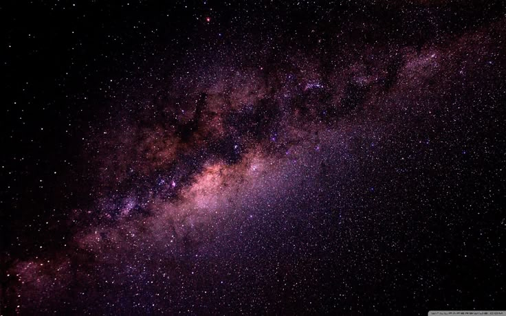
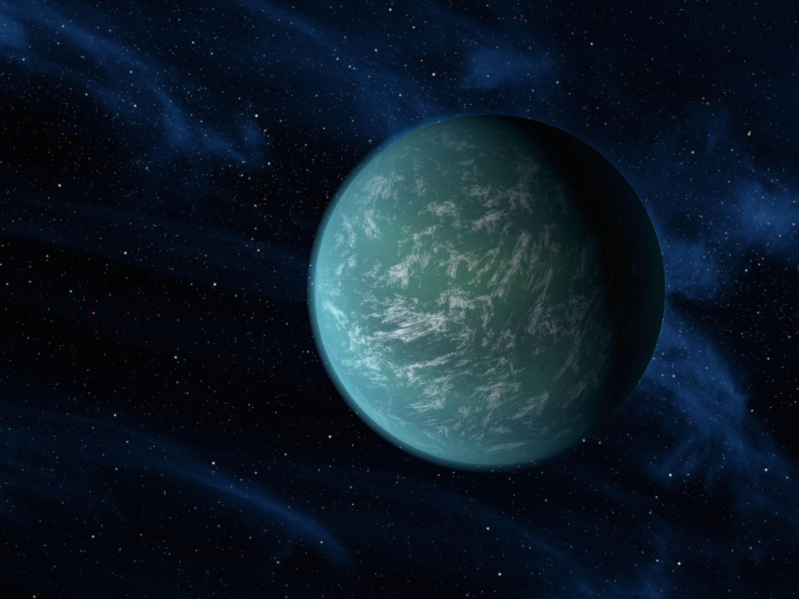

M42 · Tinh vân phát xạ
M42 · Tinh vân phát xạ
Tinh Vân Lạp Hộ
Vườn ươm sao sáng nhất trên bầu trời mùa đông, cách Trái Đất khoảng 1.344 năm ánh sáng.
Đang kết nối tín hiệu vũ trụ...
MỘT GÓC NHỎ GIỮA VÔ CÙNG
Có những hành trình bắt đầu chỉ bằng một lần nhìn lên bầu trời. Đây là nơi mình giữ lại sự tò mò ấy — và mời bạn cùng đi xa hơn.
Từ một người yêu thiên văn, gửi đến bạn.
01 KHỞI ĐẦU HÀNH TRÌNH / INTRODUCTION
Mọi khám phá vĩ đại đều bắt đầu từ một câu hỏi đơn sơ. Hãy cùng tìm hiểu nguồn cội của vũ trụ và niềm say mê ngắm sao trước khi bước vào các đài quan sát.
Thiên văn học nghiên cứu các thiên thể và những hiện tượng xảy ra trong vũ trụ. Nhưng với mình, nó còn bắt đầu từ một câu hỏi rất nhỏ: điều gì đang ở ngoài kia?
Từ những đốm sáng lấp lánh trên bầu trời đêm cho đến những thiên hà xoắn ốc khổng lồ cách chúng ta hàng triệu năm ánh sáng, vũ trụ luôn chứa đựng những bí ẩn tuyệt đẹp chờ con người khám phá.
Khoảng 13,8 tỷ năm trước, vũ trụ ở trạng thái cực nóng và đặc. Mô hình Big Bang mô tả quá trình không gian giãn nở và nguội dần từ thời kỳ ấy; đó không phải một quả bom nổ vào khoảng không có sẵn.
Vật chất dần tập hợp thành sao và thiên hà. Nhiều thế hệ sao đã làm giàu vũ trụ bằng các nguyên tố nặng, trước khi Hệ Mặt Trời và chúng ta xuất hiện. Đọc tiếp cùng NASA ↗
02 ĐÀI QUAN SÁT CỐT LÕI / OBSERVATION DECK
Không gian tương tác 3D đa chiều, cho phép bạn quan sát các hành tinh, theo dõi bầu trời thực tế đêm nay và ghi dấu những điều bạn tò mò vào nhật ký.
ĐÀI QUAN SÁT / TƯƠNG TÁC 3D
Kéo để đổi góc nhìn. Cuộn để tiến gần. Chọn một thiên thể và dành cho nó một chút thời gian.
Một mô hình để khám phá: kích thước, khoảng cách và thời gian đã được điều chỉnh cho dễ quan sát, không cùng tỷ lệ với thực tế.


03 PHÒNG THÍ NGHIỆM VŨ TRỤ / COSMIC LAB
Nơi những định luật ánh sáng, thời gian và lực hấp dẫn định hình trật tự vũ trụ được mô phỏng trực quan.
GÓC TÒ MÒ / 01
Khi nhìn Mặt Trời, bạn đang nhìn về quá khứ. Ánh sáng phải vượt qua khoảng không trước khi chạm tới mắt chúng ta.
Khám phá khoảng cách cùng NASA ↗để tới khoảng cách bạn chọn
1 AU ≈ 149,6 triệu km. Thời gian tính theo khoảng cách đã chọn; vị trí các hành tinh chỉ là mốc trung bình. Chuyển động ánh sáng trên hình được tăng tốc để minh họa.
04 KHO LƯU TRỮ VŨ TRỤ SÂU / DEEP SKY ARCHIVES
Vượt qua ranh giới Thái Dương Hệ — chiêm ngưỡng tinh vân rực rỡ, những hòn đảo thiên hà khổng lồ và vực thẳm không-thời gian.
M42 · Tinh vân phát xạ
Vườn ươm sao sáng nhất trên bầu trời mùa đông, cách Trái Đất khoảng 1.344 năm ánh sáng.
 M1 · Tàn tích Siêu tân tinh
M1 · Tàn tích Siêu tân tinh
Tàn dư rực rỡ từ vụ nổ sao năm 1054, chứa một ẩn tinh pulsar quay 30 vòng/giây.
 NGC 7293 · Tinh vân hành tinh
NGC 7293 · Tinh vân hành tinh
"Con Mắt Vũ Trụ" — tương lai xa xôi khoảng 5 tỷ năm nữa của chính Mặt Trời của chúng ta.
 M16 · Vườn ươm sao
M16 · Vườn ươm sao
Những tháp bụi hydro cao nhiều năm ánh sáng đang sinh dưỡng hàng nghìn vì sao non trẻ.
.png) NGC 3372 · Phức hợp tinh vân
NGC 3372 · Phức hợp tinh vân
Nơi chứa sao siêu khổng lồ Eta Carinae — một trong những ngôi sao bão hòa mãnh liệt nhất Ngân Hà.
.jpg) NGC 6302 · Tinh vân lưỡng cực
NGC 6302 · Tinh vân lưỡng cực
Đôi cánh khí nóng hơn 20.000°C giải phóng từ một ngôi sao trung tâm sắp hoàn tất vòng đời.

ĐẢO VŨ TRỤ · HÀNG TRĂM TỶ SAOCấu trúc khổng lồ chứa hàng trăm tỷ ngôi sao, quay chậm rãi quanh một hố đen siêu khối lượng ở tâm điểm.
 VỰC THẲM KHÔNG-THỜI GIAN
VỰC THẲM KHÔNG-THỜI GIAN
Nơi mật độ vật chất vô hạn bẻ cong không gian và làm ngưng đọng dòng thời gian tại ranh giới chân trời sự kiện.

THẾ GIỚI XA XÔI · 5.500+ NGOẠI TINHNhững thế giới quay quanh các mặt trời xa lạ — một số chứa đại dương lỏng, mở ra hy vọng tìm kiếm sự sống.
05 BIÊN NIÊN SỬ LỊCH SỬ / HUMAN CHRONICLE
Hành trình nhân loại ngước nhìn và chinh phục không gian qua các thời đại, từ vệ tinh đầu tiên năm 1957 đến những kính viễn vọng nhìn thấu bình minh vũ trụ.
Liên Xô phóng Sputnik 1, vệ tinh nhân tạo đầu tiên.

NASA đưa phi hành gia Apollo 11 lên Mặt Trăng.

Kính viễn vọng Hubble được phóng, nhìn xuyên thiên hà.

Robot tự hành hạ cánh và khám phá Sao Hỏa.

Mắt thần nhìn về thuở bình minh vũ trụ.

Đâu là cột mốc vĩ đại tiếp theo của nhân loại ?

VỀ ĐÀI QUAN SÁT
Mình bắt đầu project này vì từ rất lâu, bầu trời luôn khiến mình muốn biết ngoài kia còn gì. Càng tìm hiểu, mình càng muốn dựng nên một nơi để giữ lại cảm giác ấy.
Đây là nơi khoa học gặp cảm xúc: một sa bàn để chạm vào những thế giới xa xôi, một câu chuyện để đi qua chúng, và một cuốn nhật ký để giữ lại điều khiến bạn ngước nhìn.
Được xây thủ công bằng HTML, CSS, JavaScript và Three.js.
Ý tưởng, thiết kế trải nghiệm và phát triển đài quan sát.
Đồng hành và đóng góp cho hành trình của project.
POSTCARD / 01“Có lẽ điều kỳ lạ nhất về vũ trụ không phải là nó quá lớn, mà là chúng ta đủ nhỏ để vẫn muốn hiểu nó.”
— Phúc
NASA Science, ESA và JPL là các nguồn tham khảo chính cho dữ liệu thiên văn.
NASA/Wikimedia Commons, Unsplash, Shutterstock và các ảnh được lưu cục bộ trong project.
Three.js, AOS và Unity WebGL.
Thiết kế & phát triển bởi Lê Trọng Phúc, với sự đóng góp của Nguyễn Chí Toàn.
Mô tả chi tiết...
PHÂN LOẠI: ...
KÍCH THƯỚC: ...
KHOẢNG CÁCH: ...
...
"Chúng ta được định hình từ tro tàn của những vì sao."
Và bạn, là một mảnh ghép của vũ trụ bao la này.